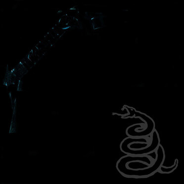

Fecha de Lanzamiento:
25 de julio de 1983
Setlist:
- Hit the lights
- The Four Horsemen
- Motorbreath
- Jump In The Fire
- (Anesthesia) - Pulling Teeth
- Whiplash
- Phantom Lord
- No Remorse
- Seek and Destroy
- Metal Militia
*Haz click sobre la imagen para escuchar el disco
Fecha de lanzamiento
27 de julio de 1984
Setlist:
- Fight Fire With Fire
- Ride the Lightning
- For Whom the Bell Tolls
- Fade to Black
- Trapped Under Ice
- Escape
- Creeping Death
- The Call of Ktulu
*Haz click sobre la imagen para escuchar el disco

Fecha de lanzamiento
03 de marzo de 1986
Setlist:
- Battery
- Master of Puppets
- The Thing That Should Not Be
- Welcome Home (Sanitarium)
- Disposable Heroes
- Leper Messiah
- Orion
- Damage Inc.
*Haz click sobre la imagen para escuchar el disco
Fecha de lanzamiento
07 de septiembre de 1988
Setlist:
- Blackened
- And Justice for All
- Eye of the Beholder
- One
- The Shortest Straw
- Harvester of Sorrow
- The Frayed Ends of Sanity
- To Live is to Die
- Dyers Eve
*Haz click sobre la imagen para escuchar el disco

Fecha de lanzamiento
12 de agosto de 1991
Setlist:
- Enter Sandman
- Sad But True
- Holier Than Thou
- The Unforgiven
- Wherever I May Roam
- Don´t Tread on Me
- Through the Never
- Nothing Else Matters
- Of Wolf and Man
- The God That Failed
- My Friend of Misery
- The Struggle Within
*Haz click sobre la imagen para escuchar el disco
Fecha de lanzamiento
04 de junio de 1996
Setlist:
- Ain't My Bitch
- 2 X 4
- The House Jack Built
- Until It Sleeps
- King Nothing
- Hero of the Day
- Bleeding Me
- Cure
- Poor Twisted Me
- Wasting My Hate
- Mama Said
- Thorn Within
- Ronnie
- The Outlaw Torn
*Haz click sobre la imagen para escuchar el disco
Fecha de lanzamiento
18 de noviembre de 1997
Setlist:
- Fuel
- The Memory Remains
- Devil's Dance
- The Unforgiven II
- Better Than You
- Slither
- Carpe Diem Baby
- Bad Seed
- Where the Wild Things Are
- Prince Charming
- Low Man's Lyric
- Attitude
- Fixxxer
*Haz click sobre la imagen para escuchar el disco
Fecha de lanzamiento
05 de junio de 2003
Setlist:
- Frantic
- St Anger
- Some Kind of Monster
- Dirty Window
- Invisible Kid
- My World
- Shoot Me Again
- Sweet Amber
- The Unnamed Feeling
- Purify
- All Within My Hands
*Haz click sobre la imagen para escuchar el disco
Fecha de lanzamiento
12 de septiembre de 2008
Setlist:
- That Was Just Your Life
- The End of the Line
- Broken, Beat & Scarred
- The Day That Never Comes
- All Nightmare Long
- Cyanide
- The Unforgiven III
- The Judas Kiss
- Suicide & Redemption
- My Apocalypse
*Haz click sobre la imagen para escuchar el disco

Fecha de lanzamiento
18 de noviembre de 2016
Disco 1
- Hardwired
- Atlas, Rise!
- Now That We're Dead
- Moth Into Flame
- Dream No More
- Halo On Fire
Disco 2
- Confusion
- ManUNkind
- Here Comes Revenge
- Am I Savage?
- Murder One
- Spit Out The Bone